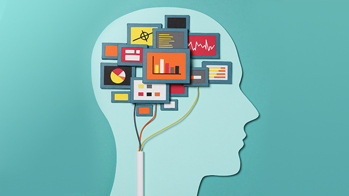
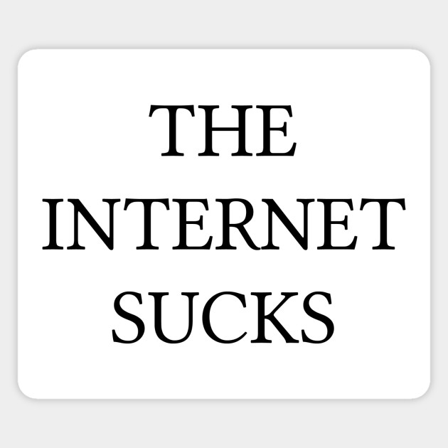

It's always odd to read a piece from a different time depicting how they think things will be in the future. It's weird when things align and still fascinating when they don't. Still, I was pretty bored reading this essay. I found myself easily getting side-tracked and distracted when trying to make my way through each sentence's end, and maybe that goes to show how this piece comes to light: I, having the opportunity to garner limitness knowledge and information from the tip of my fingers am still completely and utterly disinterested. Funny. That being said, I appreciate the detail Bush put into his efforts of expression. If I'm being honest, his series of ideations and curiosity for the future is not completely off. As previously stated, our access to information is seemingly continuous and relatively universal to anyone with access to internet and an electronic device. There are presently talks of micro-chips embedded in the population, there are some people fully convinced Elon Musk and other tech moguls are curating these devices as we speak, but I'm getting a bit sidetracked. Where I mean to go is that in our current time, we all kinda have the ability to store our thoughts, ideas and memories electronically in a plethora of ways. LIke a notes or voice memo app or even simply saving photos and videos to one's phone. And if we're being really honest, his piece was way ahead of its time, hitherto the creation of computers, the internet, and speech recogntion. Kinda crazy to think about.
Throughout his work, Berner-Lee exhbits the absolute trueness in that the web is taken for granted. As a whole, populations are so used to its presence that we do not even recall a time it wasn't readily available. From its ease to universitality, there is power in the web and having access to it. Anyone, regardless of economic strata, gender, race or really any other segment of one's background has the opportunity to revolutionize and have a voice on account of this platform. That is not to say that there aren't risks in utilizing it, because there most definitely are, but now is no better time than any other to recognize its import and risks and rise up to defend something we are so used to being available. He continues his piece by exhbiting the mutlitude of ways people's human rights are at risk. What once was a public resource at all our disposable is quite frankly a monopoly right in front of our eyes, corporations and greedy companies yearn to limit our connectivity and ease. All these aspects considered, our generation is notably unfearful in the face of opposition, and I have no doubt that we are more than capable to rise up against injustices to our internet freedoms.
